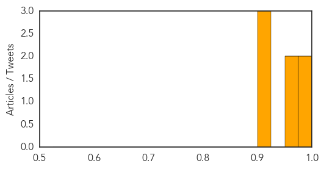

Measles
30-Day Web Trend
2 alerts, 0 warnings
30-Day Twitter Trend
0 alerts, 0 warnings

Article Locations

Article Confidences
Top Articles:
- 0.986
- Quarantine in measles scare - health - national
- 0.984
- US Measles Cases Reach 20-Year High
- 0.967
- Lorain County immune to Ohio measles outbreak so far
- 0.951
- Measles journey highlights risk to unvaccinated kids
- 0.918
- Deadly Measles Outbreak in North Korean Province Bordering China
- 0.918
- Measles is making a comeback; here's what parents need to know
- 0.902
- Have You Taken Your Shots?
Top Tweets:
-
No tweets found for Jun 25, 2014
Bubonic Plague
30-Day Web Trend
1 alerts, 0 warnings
30-Day Twitter Trend
0 alerts, 0 warnings

Article Locations

Article Confidences

Top Articles:
-
No articles found for Jun 25, 2014
Top Tweets:
-
No tweets found for Jun 25, 2014